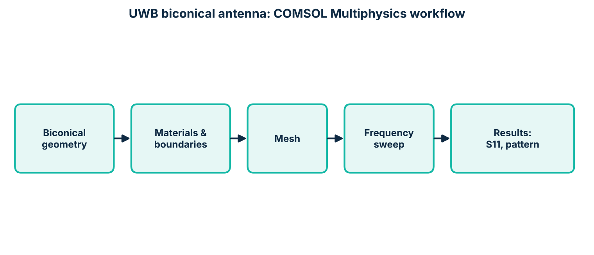

Overview
This project is an Ultra-Wideband biconical antenna. A biconical shape is a natural choice for wide bandwidth because its cross-section changes gradually along its length.
Objective
Create an antenna that works over a very wide frequency range, and verify its behaviour by electromagnetic simulation.

Thought Process and Decisions
- Build the geometry. I modelled two cones that meet at a feed point. Cone angle and length control the bandwidth, so they were the main design variables.
- Set materials and boundaries. The antenna is surrounded by air with an absorbing outer boundary, so reflections from the edge of the model do not distort the result.
- Mesh the model. The mesh has to be fine enough to resolve the shortest wavelength in the sweep, which is a trade-off against computation time.
- Sweep frequency. I ran a frequency sweep across the band of interest to see how the antenna behaves at every frequency, not just one.
- Evaluate the results. I checked reflection (S11) and the radiation pattern to judge bandwidth and matching, and adjusted the geometry where needed.
Results and Evidence
Screenshots, waveforms and test results for this project:


My Contribution
I was responsible for the design and simulation work described above: choosing the architecture, making the design decisions, building the model and evaluating the results.
Skills Demonstrated
- Electromagnetics
- Antenna modelling
- COMSOL Multiphysics
- Simulation analysis